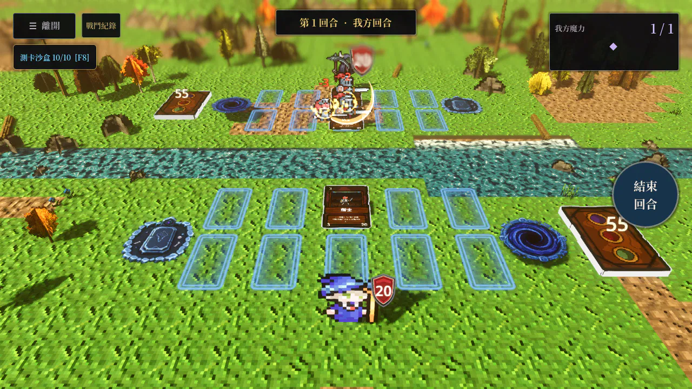

Godot 實際牌桌錄製。切換演出、慢速播放，或拖動時間軸查看命中。

近戰角色先移到目標側前方，再揮擊命中並返回原位。傷害仍在起手後 0.35 秒結算；反擊爆點與數字跟隨角色，卡槽與碰撞位置保持穩定。
弓箭手與法師保留原地出手，治療與加盾不突進。出手方式可依角色調整；Hit-stop 只停角色動作。「減少動態效果」會關閉角色前衝、Hit-stop、鏡頭震動與新生成的粒子／閃光，傷害數字仍保留閱讀時間。
 繁體中文 HUD
繁體中文 HUD 英文介面 · 150% 縮放
英文介面 · 150% 縮放